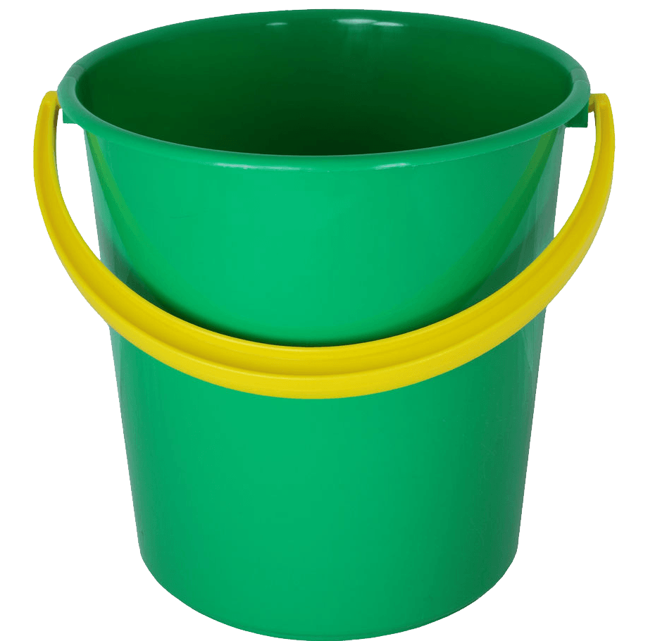
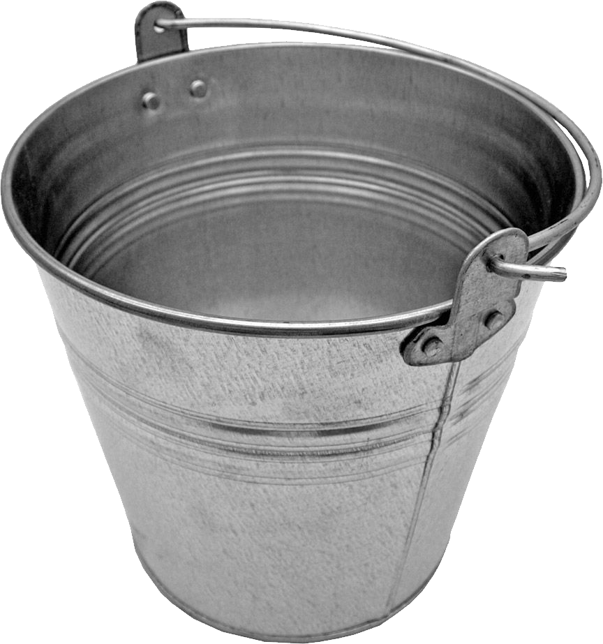

Wiadro (inaczej kubeł) – naczynie w kształcie walca lub odwróconego, ściętego stożka , dawniej najczęściej blaszane, obecnie z tworzywa sztucznego, zaopatrzone w ruchomy, kabłąkowaty uchwyt. Używane jest zazwyczaj jako pojemnik na ciecze lub materiały sypkie, głównie do ich ręcznego transportu.
plastikowe
metalowe
